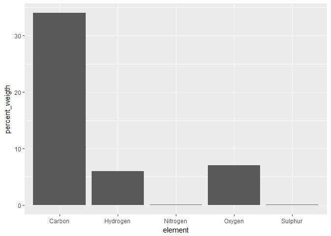
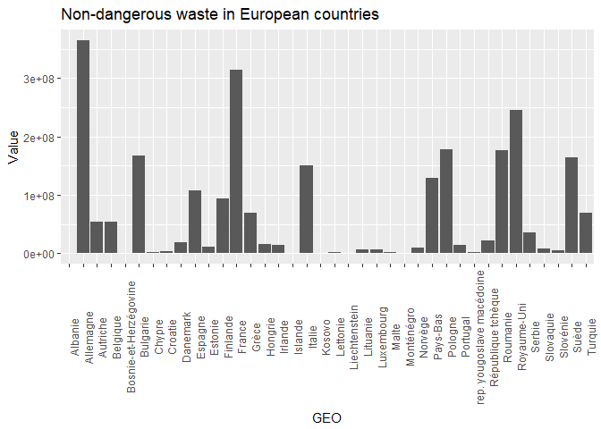
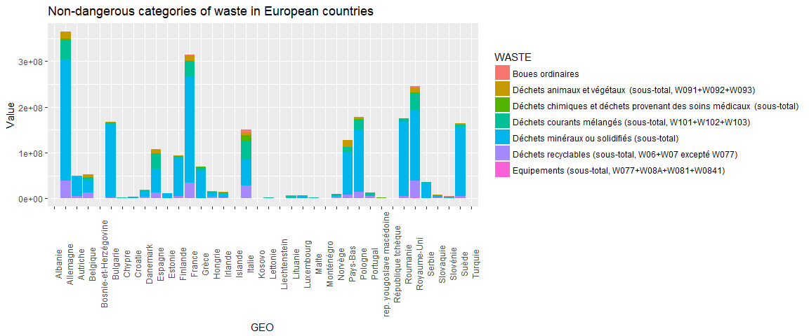

Hi everyone!
I am tackling a new topic today, which is: waste generated during races. I’ll tell you why this is coming up now. I started the racing season with a road 10km called Asparun which was a relatively small race, 354 runners on the 10k plus probably as many on the 5k, which is more people than I usually see at my small local races, and I saw so many people just throwing their water goblets not IN the trash but sometimes 500 meters away, and it shocked me. When you are an elite, fine, you don’t have time. But as an age-grouper, what’s the point? But then I ran in a bigger event which was my first half marathon. And there, because there were so many people, the goblets were everywhere on the ground. Gel wrapers were everywhere as well. I was even more shocked. Afterwards, I decided I didn’t want to use goblets any more and brought my soft flask to refill at aid stations at my next race, a 15k trail. It was completely manageable and I don’t understand why everyone doesn’t use them.
soft flasks to carry arround from Decathlon:

After that race, I did my second half marathon, the biggest event I’ve been to, the Annecy half marathon. It was insane, there were over 2000 of us running it, and it was hell to try to get water at aid stations, not to mention most times there wasn’t any food left when I came along… the piles of goblets, gel wrapers etc. was humongous, honestly it was more than I could possibly imagine. This is not ok for me. Apparently I’m not the only one who thinks that, see for yourself on these couple of examples who all mention the need to be more ecological:
http://www.schneiderelectricparismarathon.com/en/a-marathon-with-values/our-waste-management
http://www.zerowastesg.com/2011/07/21/waste-generated-from-marathons/
There are many more websites of races that try to handle all this trash better. But I think recycling is not enough. It also costs money and energy, and nearly nothing is ever 100% recycled.
Cost comparison for recyclable paper cups vs disposable plastic cups
Let’s do some quick calculations with inline R (the code will be on my github):
plastic cups cost 64.5 euros for 3000 which makes it 0.0215 each according to this link.
paper cups that you can recycle cost 2,37 euros for 50 so 0.0474 euros each according to this link.
A paper cup weighs about 4 grams and a plastic cup weighs about 3 grams according to this link.
I found this page in french that states that it will charge you 0.16 euros per kg of paper. It probably doesn’t include transport in the price but it gives us an idea.
So recyclable paper cups cost about 2-3 times more than plastic cups. Does it make such a difference for 2 cents? let’s check for different sizes of races on the basis that one cup per runner will be there every 5k minimum depending on the heat expected, and including at the end:
| race | material | 300 runners | 700 runners | 10000 runners | number of cups | total kg to be recycled | price for recycling(euros) |
|---|---|---|---|---|---|---|---|
| 5k | plastic | 6.45 | 15.05 | 215 | 300 - 10000 | / | / |
| 5k | paper | 14.22 | 33.18 | 474 | / | 1.2 - 40 | 0.192 - 6.4 |
| 10k | plastic | 12.9 | 30.1 | 430 | 600 - 210^{4} | / | / |
| 10k | paper | 28.44 | 66.36 | 948 | / | 2.4 - 80 | 0.384 - 12.8 |
| half | plastic | 25.8 | 60.2 | 860 | 1200 - 410^{4} | / | / |
| half | paper | 56.88 | 132.72 | 1896 | / | 4.8 - 160 | 0.768 - 25.6 |
| marathon | plastic | 51.6 | 120.4 | 1720 | 2400 - 810^{4} | / | / |
| marathon | paper | 113.76 | 265.44 | 3792 | / | 9.6 - 320 | 1.536 - 51.2 |
So the difference in price is only a little significant when you have huge numbers of runners for a really big event like the Paris Marathon. So switching to paper cups that you can recycle for most race directors isn’t such a big deal. But look at the sheer number of cups that have to be recycled? Financially if we look at the last column of that table, it isn’t expensive at all, so it really doesn’t make any sense why paper cups are not omnipresent yet.
Actually, I went to a race week end before last which is the trail d’Uriage (utr or uriage trail running) and they had reusable cups on the 10k trail which will last years. I thought that was much better, because people won’t throw those away in the wild. It is an investment but on the long run it’ll even save some money. Let’s calculate how long that will take:
- I found this link which says that for a pack of 15 it’ll cost 4.43 euros so 0.2953333 euros each which is 6.230661 times more than for recyclable paper cups. So it’ll take this many events to make it be beneficial in terms of money saved. Of course these reusable plastic goblets won’t last for ever, but if they are stored properly, I think they can be used for many years, and the benefits will by far outweigh the disadvantages.
The conclusion to this calculation is that you should get a soft flask, I recently got one and it’s been amazing for training and racing, (see picture above) it takes very little space, and there are lots of different sizes (on the picture I have the 150 mL and the 500 mL). Decathlon started making them recently and I’ve been using them all the time since. Otherwize Salomon makes really good ones, my friends tell me.
Non-recyclable waste generated from paper recycling
I found a dutch website showing what are the rejects from paper recycling you can find with this link.
| element | unit | percent_weigth | percent_dry_weight | percent_no_ash_wet_weigth | means_obtention |
|---|---|---|---|---|---|
| Carbon | wt% | 34.00 | 60.71 | 70.85 | Measured |
| Hydrogen | wt% | 6.00 | 10.71 | 12.50 | Measured |
| Nitrogen | wt% | 0.10 | 0.18 | 0.21 | Measured |
| Sulphur | wt% | 0.05 | 0.09 | 0.10 | Measured |
| Oxygen | wt% | 7.00 | 12.50 | 14.59 | Measured |

The rejects we observe above in percent of total weigth come from when the “pulp” of the paper was extracted. It is what is left behind that we mostly don’t know how to recycle. Most of it is CHO atoms, mostly plastics, glue and ink. Some of it can also be recycled, but not all of it, so even if paper cups are recycled, it’s always better not to have any at all. Sulfur reacts will almost all other elements. Alone it is not toxic, but if burned in air it an create acids which are toxic, so the way it is handled matters.
General waste stats in Europe
I found more data on this website about waste in Europe in 2014 which I am going to analyse now. I downloaded a csv file from the website which categorizes different types of waste, and whether it’s dangerous for our health. The file I downloaded is in French so that’s why the country names are in french, and the legends in one of the graphs might also be difficult to read, but hopefully I will make it easier for you in my comments if you can’t read french. Total European Union (composition as is in 2014) dangerous waste is 9.47810^{7} tonnes. For non-dangerous waste it is 2.4000910^{9}. That is BILLIONS of tonnes. I am first going to compare total dangerous and non-dangerous waste from European countries:

Germany, France and the UK are the three countries that produce the most dangerous waste, followed by Sweden, Bulgaria and Italy. My country could definitely afford to be much better at controlling their waste, I hope this number goes down in the next few years, especially after the Paris agreement was ratified in 2016.

Again the same countries produce the most amount of non-dangerous waste. But we also have Poland and Romania join the second tier of most wasteful countries with non-dangerous waste.
I want to look now at the different categories of non-dangerous waste:

This graph gives us an idea of the different types of waste we produce and the amount per category. Mineral or solidified waste is way ahead in almost every country. Second is both recyclable waste and chemical waste coming from medical use. Then comes waste from our food, which is the one we can really afford to cut down because first of all, no one needs that much meat. Actually, we don’t need any meat at all, but a reduction in consumption would already help a lot. If we all used compost as well, that number would go down to pretty much 0. For the medical waste, that is also something researchers in biology and chemistry could do better. There is also the issue that a lot of people, at least in France, are prescribed medication they don’t need. We also use medication much more than we really should.
Anyways I hope you’ve enjoyed this little article on a topic we can all afford to be more active in. I encourage you to look up the “zero waste challenge” that people have started showing on youtube, for example this one by Michelle Khare and maybe try some of the things that she shows. I have been trying to include some of those things slowly in my every day life and I think I can help reduce my waste little by little and help make a difference. For example in my city they give free composting lessons, and are trying to incorporate more composts in buildings. I hope this has been useful and has inspired you to try it as well, see you next time!
Sciathlete